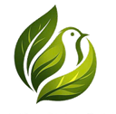

Trưởng nhóm · R&D
Nguyễn Minh Thắng
Khoa học dinh dưỡng và ẩm thực. Phụ trách nghiên cứu, phát triển sản phẩm và kiểm soát quy trình công nghệ.
Câu chuyện thương hiệu
The Green Seed được hình thành từ niềm tin rằng đổi mới bền vững có thể bắt đầu từ những thứ rất nhỏ và rất gần với đời sống Việt Nam.

THE GREEN SEED Trường Đại học Công Thương TP.HCM Từ ý tưởng đến mẫu thử đang được hoàn thiện.Đội ngũ dự án
The Green Seed là dự án sinh viên tại Trường Đại học Công Thương TP.HCM, kết hợp chuyên môn sản phẩm, tài chính, thị trường, chuỗi cung ứng và truyền thông.
Khoa học dinh dưỡng và ẩm thực. Phụ trách nghiên cứu, phát triển sản phẩm và kiểm soát quy trình công nghệ.
Khoa học dinh dưỡng và ẩm thực. Phụ trách nghiên cứu, phát triển sản phẩm và kiểm soát quy trình công nghệ.
Tài chính ngân hàng. Phụ trách quản trị tài chính và tối ưu chi phí.
Kinh doanh quốc tế. Phụ trách phát triển thị trường và chuỗi cung ứng.
Ngôn ngữ Anh. Phụ trách truyền thông quốc tế và phiên dịch.
Nghiên cứu sinh tiến sĩ chuyên ngành Dinh dưỡng.
Điểm khởi đầu
Trong chuỗi chế biến nông sản, hạt nhãn thường không còn nhiều giá trị sử dụng. Trong đời sống hằng ngày, màng bọc nhựa lại được dùng rất nhanh rồi bỏ đi.
Hai vấn đề tưởng như tách biệt đã gợi ra một hướng tiếp cận: dùng nguồn phụ phẩm sinh học để phát triển một vật liệu có thể thay thế một phần nhựa dùng một lần.
“Từ hạt nhãn – Vì tương lai xanh.”
Slogan chính thức của The Green Seed
Hành trình
Nhận diện đồng thời bài toán rác nhựa và sự lãng phí phụ phẩm hạt nhãn.
Nghiên cứu hướng phát triển màng bọc thực phẩm có nguồn gốc sinh học.
Tạo được sản phẩm mẫu và bắt đầu đánh giá các đặc tính cần thiết.
Tiếp tục kiểm nghiệm, tối ưu hiệu năng, quy cách, bao bì và mô hình thương mại.
Nguyên tắc thương hiệu
Phân biệt rõ đặc tính đã được xác nhận và đặc tính đang trong quá trình nghiên cứu.
Không chỉ kể câu chuyện môi trường; sản phẩm phải giải quyết được nhu cầu sử dụng thật.
Tạo giá trị mới từ phụ phẩm và hướng tới giảm phần chất thải ở cuối vòng đời.